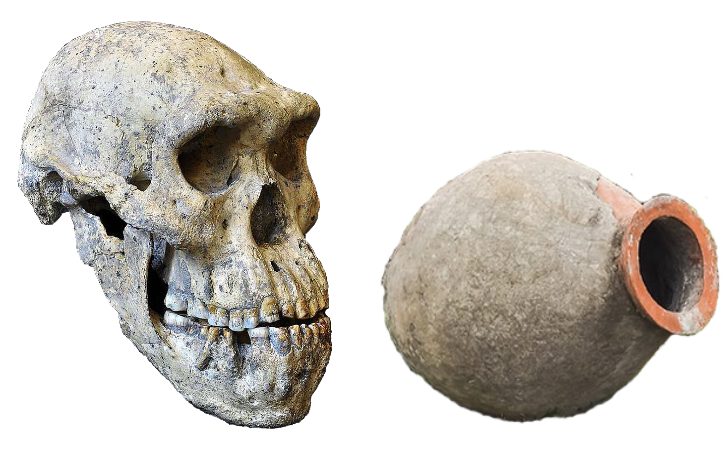

#lostbalcony ist eine Online-Initiative, die vor dem Verlust Georgiens als Balkon Europas warnt. Die Gefahr, dass Georgien im Jahr 2022 unter Eindruck eines bruten Krieges in der Ukraine bei seinen Bestrebungen Teil der Europäischen Union (EU) zu werden vergessen wird wäre ein historischer Fehler. Georgien ist genau wie die Ukraine und die Republik Moldau ein Teil Europas.
Georgien das wegen seiner Lage am Rand Europas, zwischen Europa und Asien oft nur als "Balkon Europas" bezeichnet wird, hat eine enge geschichtliche Verbindung zu Europa.
 Die Ausbreitung des Homo erectus von Afrika nach Europa wird durch aktuelle Ausgrabungen in Georgien nachgewiesen und diese zeigen wie Frühmenschen vor 2 Mio. Jahren in Dmanissi - im südlichen Georgien - zu finden sind.
Eine andere Form europäischen Kulturguts ist der Weinanbau, der in Georgien Tradition hat und bereits 6.000 Jahre v. Chr. in der Region Kolchis im Westen Georgiens Spuren hinterlassen hat. Ausgrabungen belegen den Anbau kultivierter Weinreben, die noch heute angebaut werden.
Auch wenn die Beziehung Georgiens mit Russland als großem Nachbarn im Kaukasus und Georgien als Teil der Sowjetunion im 19. und 20. Jahrhundert die Geschichte Georgiens geprägt hat, ist dies kein Grund dafür Georgien aus der europäischen Familie auszuschließen.
Georgien hat schon immer eine enge Beziehung zu Europa gesucht und die früheren, fadenscheinigen, geostrategischen Gründe sollten im 21. Jahrhundert überholt sein:
Auch wenn die Aufnahme Georgiens in die EU evtl. noch nicht heute auf der Tagesordnung steht darf bei der aktuellen politischen Lage darf Georgien nicht der Willkür seiner Nachbarn überlassen werden. Gemeinsam will diese Initiative mit Bildern von Balkonen in Georgien ein politisches Zeichen gegen Georgien als #lostbalcony setzen. Georgien als Kandidat für die EU ist ein politisches Zeichen und Georgien sollte nicht nur als unbeschreiblich schönes Urlaubsland am Rande Europas, sondern als Teil Europas mit einer Zukunft in der EU gesehen werden.